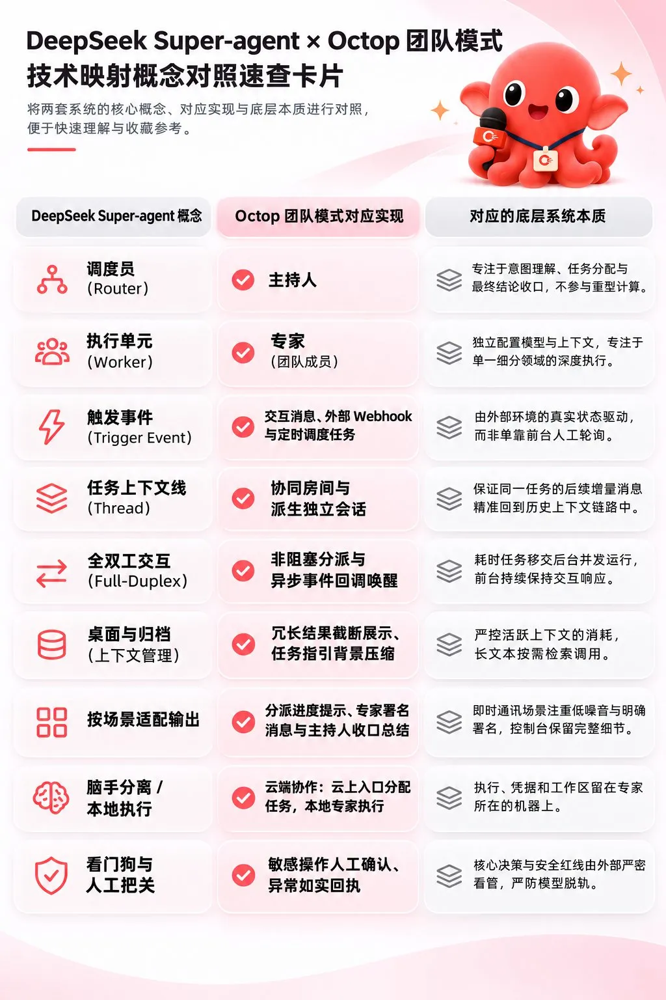

用 Super-agent 的理念，拆解 Octop 团队模式
来源：微信公众号 归档日期：2026-11-21 抓取状态：成功 原文字符：12466｜配图：4 张
摘要速览
- 群同步待补摘要 · 微信公众号
核心内容
（待补充）
可执行启发
（待补充）
我的想法
（待补充）
原文沉淀
目录
- 作者：Jubaoliang，Octop 负责人
- 一、Super-agent 要解决的问题
- 二、Super-agent 的几个关键设计
- 2.1 双层结构：上层调度，下层执行
- 2.2 事件驱动：由外部触发替代轮询输入
- 2.3 全双工：前台不等待后台
- 2.4 持久在线与独立巡查
- 三、再看 Octop 的团队模式
- 3.1 主持人负责统筹调度，专家专注于细分执行
- 3.2 异步协作与非阻塞执行机制
- 3.3 核心理念上的不谋而合
- 3.3 认知大脑在云上，执行的双手留在本地
- 3.4 当前各自面临的工程边界
- 四、两套设计背后的共通逻辑
- 附录 ｜参考来源

作者：Jubaoliang，Octop 负责人
导读DeepSeek 近日发布长文，系统阐述了其 Super-Agent 设计理念——打破 AI「单次仅能处理单一任务」的旧范式，以调度员（Router）加执行单元（Worker）的双层架构实现任务并行与后台运行，解放用户等待时间。
无独有偶，在工程实践的另一条路径上，Octop 于 1.0.2 版本便已上线「团队模式」，由主持人 Agent 统筹分解任务、多名专家 Agent 并行执行。两者核心思路的殊途同归，恰好形成了一次跨越产品与时间的对照印证。本文即以 DeepSeek 的 Super-Agent 框架为参照，解析 Octop 团队模式的具体实现路径——两者如何在工程层面分别落地「多任务并行」这一共同目标。
DeepSeek 近日发布了一篇长文，系统阐述了 Super-Agent 的设计理念。其核心主张是：AI 不应被束缚在「单次仅处理单一任务」的旧范式中。Super-Agent 采用双层架构——前端由调度员（Router）负责接收请求与任务分配，后端由多个执行单元（Worker）并行作业；耗时较长的任务自动转入后台运行，前台则持续响应新的交互请求；每条消息仅保留核心上下文，冗长材料归档存储并按需检索。这样一来，用户无需停留在单一窗口苦苦等待，AI 也能真正实现多任务的同步推进。
Octop 是一款由腾讯云开源的多用户 AI 助手（Github 地址： https://github.com/TencentCloud/Octop）。在 Super-agent 的设计思路公开之前，Octop 1.0.2 版本便已上线了「团队模式」：整个团队由一名主持人与若干专家 Agent 组成，主持人负责任务的梳理与分派，专家们并行推进各自负责的子任务，核心思路不谋而合。本文即以 Super-agent 为参照，解析 Octop 团队模式的具体实现。
一、Super-agent 要解决的问题
先来看一个日常工作中最常见的场景。
群里突然发来通知，要求周五提交一份季度汇报 PPT。此时手头还在排查线上故障，又有紧急的新功能要赶进度，无奈之下只能把 PPT 需求复制出来，新建一个会话窗口。随着手头的事情增多，浏览器里的对话标签越开越多，每个窗口分别推进到哪一步，全凭个人记忆。等到两天后汇报材料做完，同事又反馈第三页的业务数据需要更新，但早已记不清当初是在哪个窗口生成的，只能把前因后果重新给模型描述一遍；找不到历史记录，便不得不再次新开窗口。而在修改过程中，助手又要耗费数分钟重新生成整份内容，这段时间用户只能守在屏幕前干等，甚至连电脑屏幕都不敢合上。
DeepSeek 在文章中给出了一个直观的数据：一个人通常只能同时跟进三到五个处于进行状态的复杂会话。当前的模型虽然越来越聪明，逐渐摆脱了“每一步都需要人盯着看”的局限，但各项事务究竟进展到了哪一阶段，记忆负担依然落在人身上。一件事能否做好，取决于底层模型的能力强弱；而多件事能否并行推进，考验的则是人类用户的精力上限。
Super-agent 试图接管的，正是这种跨上下文的状态追踪与任务分派工作。为此，它设定了四个清晰的目标：
- 连续性：无论用户是在聊天群组还是在代码评审页面与它交互，背后的服务实体始终如一，用户无需再费心记忆哪句话落在哪个孤立的窗口里。
- 高效率：前置任务尚未结束时，不阻塞后续指令的接收，多项任务能够真正并发推进。
- 主动性：不再依赖人类一条条机械地下达指令，群聊讨论、邮件往来、自动化测试结果中一旦出现需要协同的事项，它能自主介入处理；非相关事务则静默旁观，不产生多余打扰。
- 持久性：常驻于真实的工作环境中，即便是长时间运行遭遇单点故障，也能基于持久化上下文恢复工作，无需推倒重来。
目前行业普遍采用的“提示一次、执行一步、确认结果、再规划下一步”的交互范式，本质上是一种串行运转的单线程逻辑，一旦面对多任务场景便捉襟见肘。而 Super-agent 的架构，正是为了打破这一瓶颈而设计的。
二、Super-agent 的几个关键设计
2.1 双层结构：上层调度，下层执行
DeepSeek 打过一个生动的比方：大语言模型好比是马，外部工具和运行环境是马具，封装后的产品形态则是车行；一辆配齐车夫与工具的马车，就是一个具体的 Agent，而用户则是每天需要调度发货的货主。
按照目前主流的使用方式，货主每来一批货物，就必须亲自前往车行单独雇佣一辆马车，将这单任务全权托付给它；新开一个对话窗口，就相当于重新走一遍雇车的流程。
Super-agent 换了一套协作路径：车行直接常驻到了团队的工作群中，无论是群内的日常讨论、代码评审下的改动留言，还是自动化测试抛出的异常报错，系统都能够统一感知。车行内部配备了一名专属的调度员（Router），职责非常纯粹，只负责任务的辨识与分派。所有外部需求统一汇聚到调度员手中，由其判断该分配给哪辆马车、是否需要多车协同作业，以及各方任务完成后如何汇总反馈。具体负责拉货作业的马车，则被称为 Worker。上层由轻量调度员总揽全局，下层由专业 Worker 并行执行，这便是 Super-agent 所倡导的双层架构。
在这一设计中，调度员的角色被剥离得极为轻巧：只负责接收需求与分派任务，自身绝不承担具体执行，甚至完全不配置业务工具。 正因为调度员无需分心处理繁重的业务运算，面对持续涌入的新任务时才能始终保持快速响应。他仅需进行任务意图理解和路由分配，因此选用更轻便、更敏捷的模型即可胜任；而在底层承担具体执行的 Worker，则各自配备全套业务工具与独立的上下文对话流，接入能力更强的大模型，专注于将单一任务执行完毕后向调度员汇报，最后由调度员对外统一回复。
相比之下，业内常见的“一个主 Agent 挂载若干 SubAgent”的设计并非真正的双层架构。在那种模式下，主 Agent 既要负责接收消息，又保留了自己直接下场干活的工具链，分不分工完全依赖大模型在当下的概率判断。DeepSeek 曾在试验中发现：如果系统提示词仅注明“在合适时可以寻求帮手协助”，测试五次任务竟没有一次触发分工，其中耗时最长的一项被拖延了近半小时；即使将提示词强化为“尽量将任务分配出去”，五次测试中依然出现过主 Agent 因自认为难度较低而亲自执行的情况，导致主窗口当场被长任务卡死。事实证明，只有彻底拿走调度员手中的具体业务工具，从架构层面阻断其亲自执行的可能性，才能稳定保证每一项进入系统的任务都能被可靠调度。
###
2.2 事件驱动：由外部触发替代轮询输入
当执行体系建立之后，核心问题便转向了系统何时启动运转。
驱动 Agent 工作的指令，不再是用户在对话框中逐字敲入的一行行提示词，而是整个协作网络中自然发生的外部事件：一条群聊消息、一封新邮件、一次日程提醒、代码评审中的评语，亦或是流水线构建失败的通知。这些统称为触发事件。当 Agent 嵌入工作环境后，正是这些实时发生的事件在驱动它开展工作，这也正是 DeepSeek 所强调的事件驱动理念——用户甚至无需特意找到它并主动发起对话。
当然，工作群内的绝大多数闲聊与日常沟通与业务任务并无关联，如果将每一条群消息都送入大模型做语义分析，无论在响应速度还是调用成本上都吃不消。因此系统设计了双重过滤机制：前置层先通过基础规则过滤，凡是来源渠道不符、群组未授权或不在白名单范围内的信息直接丢弃；只有通过前置过滤的有效事件，才会递交给模型层，由模型依据自然语言编写的策略规则，综合研判该事项是否应当承接。
此外，针对同一个代码评审、同一话题讨论或连续往来的邮件线索，系统会将其抽象为一条持续的“任务上下文线”。一旦某个任务被具体分配给某位 Worker，该任务线上后续追加的上下文将直接路由至对应的 Worker 手中，无需反复绕回调度员重新流转。试验表明，在代码评审提交二十多分钟后，即使评审人员追加了一条修改意见，负责该任务的 Worker 也能立刻无缝衔接历史背景，用户完全无需重述前因后果。对于已被认领的任务线，调度员不再过多干预，从而将精力聚焦在全局监控与未分配的新任务上。
更进一步，系统甚至具备适度超前的推测执行能力。当研发群内还在就某处 bug 的可能成因展开讨论时，后台 Agent 可能已经提前准备好了复现脚本与初步的修复方案；如果团队最终确认需要修复，现成的方案便可即刻输出；若讨论决定无需改动，则在后台直接废弃推测结果。通过后台适度的算力冗余，换取人类等待时间的显著降低，这在系统设计中常被称为“推测执行”（投机执行）。
与此同时，对话上下文的容量膨胀也是工程落地的一大制约。单一会话能够承载的上下文长度始终存在上限，盲目塞入过多背景往往会稀释模型的注意力，导致重点漂移；但如果信息保留不足，又会导致模型频繁调用外部工具反复检索。DeepSeek 采取的应对策略类似于日常对办公桌面的整理：当前轮次紧密相关的核心信息常驻在活跃上下文中，而篇幅冗长且调用频次较低的原始资料，则仅在主流程中保留摘要与引用标识，正文归档至持久化存储中，后续仅在需要深挖细节时按需调取。正如原文所强调的：在上下文窗口中浪费空间，本质上就是在浪费模型宝贵的推理能力。
###
2.3 全双工：前台不等待后台
在实际业务场景中，当一条新消息到达时，系统后台很可能仍有尚未执行完毕的长周期任务。在传统的交互方式下，处理方案通常是线性排队：新消息虽然已被系统接收，但必须等当前轮次完全运行结束才能开始处理。以生成一份完整的方案 PPT 为例，往往需要耗费数分钟，用户在这期间就只能在屏幕前等待；如果中途强行打断，前置任务的产出又会被彻底废弃。这种模式在通信领域被称为“半双工”，如同对讲机通话一般，一方不释放通话权，另一方就无法插入。
全双工交互模式则改变了这一机制：耗时较长的重型任务被移交至后台异步执行，前台对话流完全不阻塞，能够持续保持待命状态以响应用户的后续输入。例如当用户在后台任务运行期间提出“第二部分还要补充两个案例”，系统在完成后台任务的当前执行步骤后便能即刻捕获这一新要求；如果新指令与后台正在生成的版本并不冲突，系统会在后台产出完成后统一执行增量合并；若发现两者存在冲突，则能果断终止当前后台分支，带着新要求重新派发执行。而后台任务最终完工后，其执行成果会被封装为独立的系统消息，动态回填至前台对话流中。
从交互逻辑来看，系统原有的“模型等待外部工具返回”转变成了“系统承载等待，模型持续响应交互”。这种模式高度契合分布式系统中的异步消息机制：将复杂计算请求分派出去后，主流程继续处理其他交互，计算结果则在完成后通过回调递回。
与之配套的输出策略同样需要因地制宜：在即时通信群聊中，系统遵循最小打扰原则，仅在需要关键决策或成果交付的节点发声，且输出内容以简短结论为主；而在代码评审、长邮件或技术文档等非即时交互场景下，才详细展开完整的背景考量、改动明细以及验证报告。原文对此甚至给出了一条极具实操性的量化规范：在即时通讯场景中，单次回复内容尽量控制在百词以内。
###
2.4 持久在线与独立巡查
如果在下班离开工位时，后台某项复杂的代码重构或大型 PPT 尚未处理完毕，直接合上笔记本电脑便会导致原本部署在本机的 Agent 进程中断。虽然纯云端托管的 Agent 能够继续运行，但本机未提交的代码改动、私有内网系统的访问权限以及敏感的本地凭据，在安全要求下又无法随意同步至公有云端。
针对这一两难困境，DeepSeek 给出的架构方案是“手脑分离”：
- 将“认知规划”与“状态记忆”托管于云端：通过轻量无状态的计算容器承载核心规划逻辑，将全局对话状态与任务轨迹持久化存入高可靠数据库；
- 将“具体执行”保留在本地终端：在用户本机部署轻量守护进程，专职负责接收并执行由云端派发的具体命令；
- 一旦云端容器发生异常崩溃，系统可快速拉起新实例，通过读取持久化记录无缝接续当前任务；
- 本地代码与认证凭据自始至终保留在本地受控环境中，避免敏感资产外泄。
与此同时，面对长周期复杂任务的持续运行，单纯依赖模型内部的自我反思很难全面保障系统的高可用性。因此，主系统外部通常还会配备一个独立的看门狗守护程序（Watchdog），周期性唤醒并对全局运行状态展开巡检：它不仅监控常规的网络接口报错或调用超时，更能借助轻量模型评估每个 Worker 是否在切实推进目标、当前执行路径是否产生偏离。实践表明，Agent 系统在实际运行中最棘手的故障往往并非进程崩溃，而是模型陷入逻辑死循环或偏离了最初设定的目标，这类逻辑层面的偏航是传统进程监控工具无法捕捉的。此外，外部运维人员也可以直接使用自然语言询问“上一轮任务失败的根源是什么”，或是在线动态调整事件触发的过滤规则。
正如 DeepSeek 在文末客观指出的：这一整套设计并非凭空发明了新理论，而是计算机系统工程领域沿用数十年的成熟实践，在 AI 智能体场景下的自然延伸。
三、再看 Octop 的团队模式
Octop 是腾讯云自研的具备多用户，多专家，支持团队协作的 AI 助手。 命名灵感来自章鱼（Octopus）——多条触手协同作业，能同时处理几件复杂的事。在 Octop 1.0.2 版本中推出的团队模式，核心运转逻辑与 Super-Agent 如出一辙：由系统主持人率先对综合任务进行结构化拆解，随后将其分配给不同领域的专家 Agent，诸如市场调研、数据分析、文案策划等环节各司其职，各自闭环后再将成果交由主持人统一汇总收口。
3.1 主持人负责统筹调度，专家专注于细分执行
在 Octop 团队模式中，主持人的系统权限做得很克制，仅配置了查看团队成员、分派子任务、检索长期记忆以及感知时间的轻量工具。当用户提出一项复合需求时，请求首先统一由主持人承接。主持人会优先厘清核心目标、业务边界、限制条件以及预期的最终交付形式，进而为参与协作的每位专家分别生成一份定制化的任务指引——将工作目标、禁止边界、输出标准以及必要的背景上下文交代得清清楚楚。
从系统内核来看，Octop 团队本质上就是一个工程落地的 Super-Agent 架构：团队内部的各位专家成员被抽象封装为标准化的工具接口，主持人通过工具调用将任务消息分发至具体专家，专家在本地执行完毕后再将成果异步通知主持人。每一个专家成员在底层保持高度隔离，拥有专属的本地工作目录、独立绑定的模型服务、独立的记忆沉淀以及隔离的会话流。用户既可以在主房间内发起多专家团队协作，也可以进入私聊窗口单独与某位专家深度探讨，甚至能将同一位专家引入多个不同的协同团队，各自的上下文记忆完全不会产生混淆。
不过在交互呈现上，两者存在一处明显的取舍差异。DeepSeek 倾向于完全屏蔽执行单元的对外发声，所有输出统一收敛在调度员一人身上，以此保证界面的极致精简；而 Octop 则选择让各专家的回复直接携带其专属头像展示在协作房间中，让任务的推进过程直观透明。主持人只在全部环节结束后，输出一段不超过三句话的全局收尾，且严格避免重复专家已阐明的具体细节。这种将中间过程充分展开的做法，使得当专家之间出现方案分歧时，团队成员能够一目了然地追溯不同立场的逻辑根源。
尽管交互细节各有侧重，但两者在“对外保留统领收口的角色”这一设计理念上高度契合：DeepSeek 依靠调度员从始至终主导交互脉络，而 Octop 则由主持人把控团队协作的序幕与终局。
###
3.2 异步协作与非阻塞执行机制
在任务分配的执行机制上，Octop 同样采用了“提交即返回”的非阻塞设计：当主持人将子任务分配给对应专家后，系统绝不会陷入原地同步等待状态，而是立即转入待命模式，随时准备响应用户的后续新指令。各自分配出去的子任务完全交由对应的专家在后台并发推进，不同专家之间的任务彼此独立运行，而同一位专家名下的多项任务则在其私有队列中井然有序地排队流转。
当专家顺利完成所负责的子任务后，系统底层会将阶段性成果组装为一条带有特定标签的唤醒消息回传给主持人，消息体中会明确标示这属于已有任务的回调而非用户的新增提问，并随附一段核心答案的节选摘要。主持人接收到唤醒信号后，会智能判断是否需要触发下一轮专家分派，或者直接用简练的几句话收尾，明确向用户说明决策结论及采纳依据。
“分派即返回、后台并发作业、成果异步回填”，这三项核心特征在两套系统中均得到了完整体现。唯一的区别在于等待机制所处的抽象层次不同：DeepSeek 重构的是底层单次工具调用的等待协议，而 Octop 则是将协同链路抽象为一套事件收件箱体系——任务分派后主线程即刻释放，后台作业完成后再主动唤醒主持人。无论技术选型如何，那些耗时漫长的重型任务都成功从前台交互流中被彻底剥离出去。
3.3 核心理念上的不谋而合
深入剖析两者的工程细节，可以发现它们在诸多核心设计决策上展现出了高度的默契：
任务主线回归特定上下文。 在 Octop 中，团队协作房间本质上承载了主持人的会话主干，每位专家在此基础上派生出属于自己的子会话。同一任务后续产生的追加讨论与交付结果，都会精准排队回归至最初创建的上下文线程中，绝对不会与用户同该专家的日常私聊记录产生交叉污染。这与前文提到的“同一任务线的增量信息直达原处理单元”在设计思路上完全吻合。不同的是，Octop 并未选择彻底绕开前台的隐式路由，而是让所有新消息统一步入主持人的视野，从而更加直观地厘清任务演进的全局时序。
上下文容量的克制与归档管理。 面向篇幅冗长的工具返回数据，Octop 在前端渲染前会执行截断处理并保留折叠标记；而提供给主持人审阅的专家答卷，默认也仅提取核心结论的节选。在向下分配具体任务时，系统会自动将房间内的历史讨论纪要压缩提炼为一份精简的背景概要，并显式标注其仅供背景参考。将最关键的决策信息留在手边，将庞大的原始全文归档存放在专属空间，这一做法与 Super-Agent 所提倡的办公桌面整理法则在工程理念上如出一辙。
因地制宜的场景化表达规范。 在缺乏完整富文本界面的即时通讯渠道中，用户无法感知到协作房间内专家逐字生成的动态过程，因此 Octop 在任务分派成功的第一时间，会主动补发一条“已指派某某专家处理，请稍候……”的即时状态提示。当专家完成工作后，系统会推送带有明确身份署名的完整结果；而在主持人全局复盘时，再单独推送标有“【主持人总结】”的前缀消息。在移动端及 IM 群组中保持输出简练且主体清晰，若用户需要查阅全量推导链路，则可随时无缝切回 Web 控制台深入浏览。
单轮支持并发多路任务分派。 主持人支持在同一轮调度决策中，将复合任务拆解并同时分配给多位专家协同推进，避免前台交互被单一维度的任务分派所阻塞。DeepSeek 采取的方案则是将短时间内并发涌入的消息合并成批次统一处理。虽然工程手段不同，但两者旨在规避的前台串行阻塞痛点是完全一致的。
把关键把控权始终留在人类手中。 Octop 并没有引入完全由程序驱动的外部自动化巡检进程，而是设计了一套严谨的人机协同安全机制：当专家在执行过程中涉及调用敏感系统工具时，执行链路会主动暂停，等待人类用户的显式确认与授权，最长等待时间可达半小时，在此期间系统绝不会误判该轮任务已经超时结束。若任务分派过程中遭遇网络异常或上下文超限等问题，系统会如实唤醒主持人进行客观说明，进而由主持人决定重新分派还是向用户汇报终止，严禁模型在异常状态下凭空编造替代结果。此外，只要专家身上仍有尚未收尾的活跃任务，系统就会在规则层面禁止将该专家移除出团队或执行删除操作。DeepSeek 选择用独立的 Watchdog 巡检保障可靠性，而 Octop 则将决定系统边界的安全确认踏实地交到了人类手中。

3.3 认知大脑在云上，执行的双手留在本地
合上笔记本电脑之后，原先部署在这台电脑上的助手会一起停掉。整套系统搬到云上，云上的进程可以继续跑；工作区里尚未提交的改动、登录凭据，以及只有内网才够得到的资源，却仍然留在原来的机器上，云端够不着它们。DeepSeek 把这个矛盾收成「脑手分离」：负责规划和记忆的认知放在云端，本机只留下听命执行的进程。云端容器出了故障，可以换一个新的，读回已经存下的记录接着做；代码和凭据则始终守在本地。
Octop 的云端协作，把同一件事做成了两台实例之间走得通的一条路径。一台 Octop 放在云上，人离开工位之后，从手机或另一台电脑仍然打得开，任务从这里进来，任务分配和来回对话也在这里发生，这一侧就是随时找得到的认知入口。另一台留在家里或办公室里持续开着的机器上，仓库、凭据和内网都在它旁边，这一侧是执行的双手。两边连上以后，云端界面里会出现家里的专家。你把任务分配给他，操作上与把任务分配给本地专家一样。请求经云端协作的桥送到专家所在的实例，模型循环、工具调用和文件读写都在那台机器上完成，改动落在工作区本来所在的磁盘上，对话记录也以专家这一侧为准，云端再把结果流回你正在看的界面。
家里的机器通常处在家庭内网（NAT）环境之后，没有公网 IP，云端很难逐次直接访问它的服务端口。连接建立之后，后续请求改走已经连上的桥，云上的入口因此仍然够得到留在本地的那双手。人在外面打开云上的 Octop，完成任务分配和来回确认；仓库里的改动、凭据的调用和内网的访问，由守在这些东西旁边的专家完成。环境留在原来的机器上，人可以离开那台机器。
###
3.4 当前各自面临的工程边界
DeepSeek 在原文中非常坦诚地强调，其所公布的原型方案仍属于阶段性的探索成果，尚未达到商用级生产环境的标准。全双工机制虽然在内部推理运行框架中完成了技术验证，但在对外产品中仍未默认全面放开。如何实现长达数月乃至更久维度的记忆一致性管理、如何在让 Agent 自主调用各类生产凭据的同时避免其被意外泄露至模型上下文之中、如何构建严格的数据隐私隔离机制，这一系列核心命题在原文中被归纳为一长串尚待破解的开放式课题。作者甚至给出了直白的判断：倘若安全与隐私的隔离红线在技术上找不到彻底解法，全自主 Agent 的应用场景就只能被严格限制在一个范围极小且高度受信任的封闭沙箱中。
同样的工程克制也体现在 Octop 的产品演进路标中。目前的专家团队模式在官方定义中依然处于 Beta 试验阶段，其系统能力边界在设计文档中被清晰划定：当前版本尚未开放多团队间的嵌套协同机制，也暂未提供跨专家的集中共享工作空间；前台的任务收件箱目前主要依赖内存状态维护，一旦底层服务进程发生非预期重启，正在流转中的未决任务存在状态丢失的风险；系统内暂未集成全自动化的独立看门狗服务，也尚未实现“在群聊讨论阶段即前置预测并生成补丁”的推测执行能力；此外，跨越异构通讯软件与研发代码平台的跨端协同，在现有版本中也仍处于技术探索之中。
尽管两者的切入场景各有侧重——DeepSeek 更关注如何让复杂的软件工程任务在即时通讯与研发平台之间无缝衔接，而 Octop 则聚焦于帮助个人用户、家庭及微型团队将日常业务诉求高效分配给专业专家团队——但两者在系统底层遭遇的瓶颈却高度重合：长周期状态如何实现跨节点的高可靠持久化、单点执行异常后如何实现自动恢复、人机协同的安全护栏究竟应该划在何处、复杂后台链路被隐藏之后如何提供足够透明的用户可观测性，以及在出现现实扰动时人类如何随时人工介入修正。
四、两套设计背后的共通逻辑
DeepSeek 在其长文的终篇明确指出，这套看似前沿的系统架构在理论层面并未创造全新的范式，其本质是将在现代计算机软件工程中历经数十年反复验证的经典系统原则，重新映射到了大模型协作生态之中：通过分层架构明确调度与执行的职责边界、通过异步解耦实现长短计算路径的分流、通过就近缓存策略严控活跃资源消耗、通过推测执行提升系统响应速度、通过计算与存储分离保障弹性扩展，并引入独立的外部监控机制守护系统底线。
在 Octop 的用户手册与设计说明中，我们很难看到这些晦涩的计算机专业术语。取而代之的，是生动形象的章鱼触手隐喻、负责统揽全局的主持人角色、依据专业维度清晰划分的专家成员，以及各自独立的工作目录与不可随意挪动的协作约束。前者是用严谨的系统工程语言向架构师与开发者拆解底层拓扑，后者则是用直观的具象化语言帮助终端使用者快速建立认知模型。
然而一旦透过表象深入技术内核，便会发现两者所面临的物理约束是完全同构的：
- 人类的注意力带宽存在天然上限，单次难以兼顾三到五个以上的并行上下文，因此任务记录与统筹分派必须依赖专门的调度机制来接管；
- 传统的“思考一步、执行一步”的线性思维循环在面对并发任务时必定遭遇严重阻塞，因此重型长效任务必须与前台交互流实现异步解耦；
- 如果一个主控 Agent 既要负责统筹分派又要亲自下场承担繁杂运算，主执行链路势必会被耗时任务卡死，因此必须从权限层面彻底剥离调度者的具体执行工具；
- 单次对话流的上下文承载空间极其宝贵，过度冗余的原始资料会导致注意力机制分散漂移，因此非核心素材必须建立多级归档与按需提取机制；
- 多任务并发作业时的上下文细节交织在一起极易引发语义干扰，因此各执行单元的对话历史与执行空间必须施加物理隔离；
- 最后，核心的访问凭据、敏感业务数据以及尚未最终确认的资产变更，在安全合规的刚性约束下绝不应脱离本地受控环境。
换作任何做复杂多任务 Agent 的团队，最终也都会在这些客观存在的系统瓶颈面前做出相似的技术抉择。DeepSeek 从底层代码研发与编程辅助体系向上提炼，Octop 则从原生常驻本地的协作助手向外延展，两者的技术原点虽相距甚远，但在架构演进上，最终都用上了这一套经典的系统设计方法：分层治理、队列解耦、缓存精简、提交即返回、状态隔离以及基于回调的事件驱动。
甚至许多关键概念的定名，也往往是工程实践先行、术语定义在后。正如业内在复盘 Anthropic 提出的 Agent Skill 规范时所指出的：在这一标准化概念被大厂正式确立之前，许多极客开发者早就在遵循类似的约定，将提示词工程、参考背景文档以及可执行脚本组织在同一套结构化目录中按需调用。Super-agent 的重大价值，在于将行业中散落在各处的自发工程实践进行了系统化的理论升华与边界厘清，并辅以翔实的数据支撑；而 Octop 则是用“主持人、专家、分工协作、工作房间”这样一套温和自然的产品隐喻，让每一个没有计算机科学背景的普通用户，也能毫无门槛地享受到现代系统工程与多智能体协同带来的效率提升。
对于真实世界的使用者而言，日常协作中最朴素的核心诉求其实非常具体：那就是将手头的需求交代清楚，随后在约定的时间拿到靠谱的执行结果。至于背后的专业技术概念叫什么，大可留在事后慢慢讨论。而那些在系统底层尚未完全攻克的工程难题——状态的长期可靠保存、异常时的自动恢复能力，以及人机协作中的安全边界——则依然整整齐齐地记录在两家团队的后续待办清单中，静候着下一代智能体系统的突破与演进。
附录 ｜参考来源
- DeepSeek 产品部《Super-agent 设计探索：迈向更自主的 Agent 系统》，2026-10-31；开源原型为研究原型，官方声明非正式产品。
- 该文的公开解读与报道：《Super Agent 到底是什么？》《一文读懂 DeepSeek Super-agent》《把 AI 从「一个窗口」变成「一个同事」》《Deepseek Super Agent 是什么鬼？》，以及环球网、浙江在线、新浪财经、央广网的报道。文中试验数字引自这些解读对原文的转述，正式引用请以 DeepSeek 原文为准。
- Octop 官方《一分钟了解 Octop》；1.0.2 解读《自托管 AI 助手新特性：由不同性格的专家组队协作》；《腾讯开源 Octop：从个人助手到小团队工作区》；《腾讯云发布 Octop：开源版 WorkBuddy 真的来了？》；《Octop 装完就能用，聊得越多它越懂你》。
- Octop 项目内的《专家团队模式》《Agent 后台协作》《Inbox + Callback 方案》三份设计文档。


归属：[[02-输入/按主题/AI与效率/_index|AI与效率]]